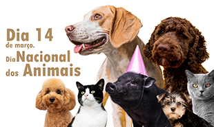
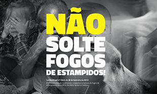
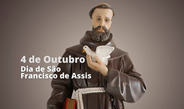

14 de MARÇO, Dia nacional dos animais
Ainda chegará o dia em que todas as familias terão um animal amado e todo animal terá uma família que o AME. Seja a semente da mudança.link

Não solte fogos
Pelos idosos, crianças, doentes, autistas e pelos animais. Bonito são as cores não o barulho. Link

Dia de São Francisco de Assis
Conhecido como padroeiro dos animais, São Francisco de Assis é um dos mais populares da Igreja Católica. Um de seus maiores reconhecimentos é devido seu amor pelos animais.Link